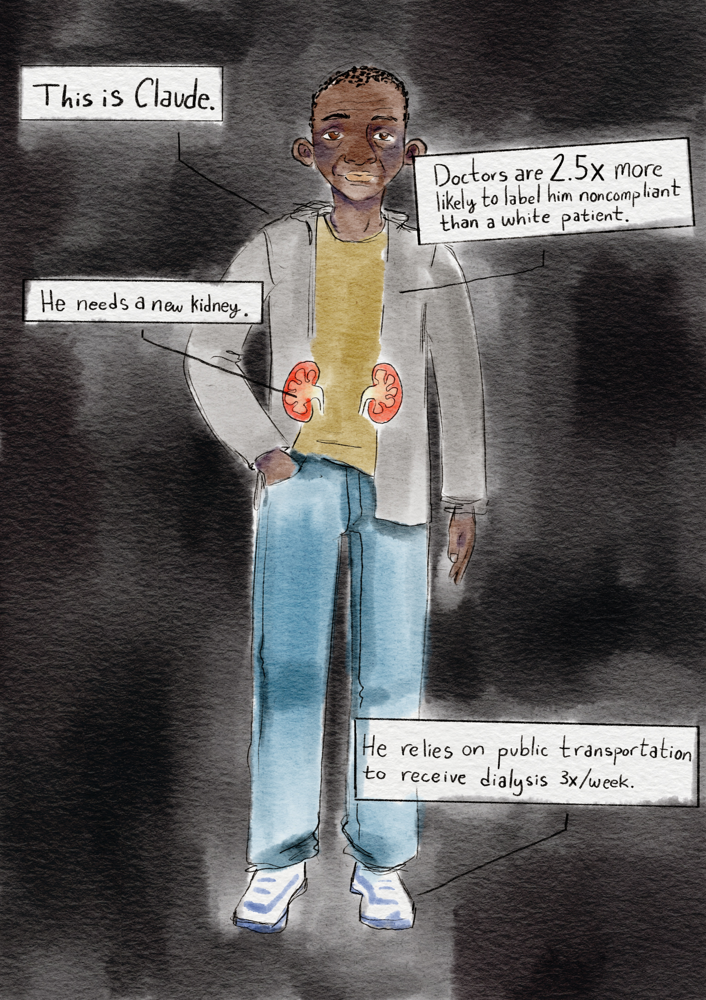

Illness comes to all at some point in their lives. The healthcare system exists to help people navigate their newfound reality by sourcing treatment and hopefully leading them to total recovery. Depending on the reason a person seeks medical attention, their journey through the healthcare system may only be a few days; their primary physician prescribes some blood pressure medication which they pick up from their local pharmacy with a follow-up appointment scheduled 6 months in the future. For others, especially the most sick, this journey is drawn out, costly, and complicated. As is the case for patients with kidney failure like Charles. Charles’ life depends on receiving dialysis three times per week and if the littlest unexpected change occurs, that treatment can break down. For Charles to be seated in the dialysis center, attempting to sleep through the steady judder of dialysate pumping into his veins, he must wake up on time, his ride-share must arrive on time, and he must have enough money to cover his ride-share.
Charles’ must religiously maintain his treatment regimen just to survive. Dialysis is not a cure for kidney failure meaning Charles’ journey through the healthcare system is hardly transient. Only a successful kidney transplant can eventually break the shackles tethering Charles’ to his treatment regimen. Eligibility for a new kidney requires near absolute compliance with ESRD treatment, which is tracked in electronic medical records and used by organ donation networks to decide who receives the livesaving organ.
The issue is that the ability to comply and who is labeled non-compliant by medical practitioners is often rife with discrimination and a myopic understanding of patients’ lives. This is where the fissures emerge in the healthcare system, allowing practitioner bias and even the vicissitudes of politicians, to jeopardize who receives medical care. For patients like Charles who are low income, have a sensitive immigration status, or simply rely on public transportation, the noncompliance label turns treatment into an indictment against their character. These patients entered the healthcare system with the oath of its namesake ringing in their ears: care for their health. Yet, instead this oversight condemns them to limbo and even death.
Noncompliance Labeling in Electronic Medical Records
Most people only see their primary care physician maybe once or twice a year, yet, in the span of less than an hour they will divulge some of the most intimate details about themself. This bond of trust between patient and doctor is built on the knowledge that doctors want the best for their patients and will not use anything they disclose against them. Yet, these interactions can still feel tedious and interrogational for many patients. If a doctor asks the visiting patient if they took their prescribed medication or showed up to appointments, the patient might not want to explain that they lost their job so they no longer have adequate insurance coverage, maybe they suffer from depression which makes treatment regimens unbearably tedious, or maybe, again, they have unreliable transportation. The patient may withhold information that brings feelings of shame or frustration. The doctor, overburdened by the litany of patients and staffing demands, clacks away at the computer and adds the simple label “noncompliance” to the patient's medical record. The patient leaves but they are unaware that this label leaves an indelible mark of their record which ultimately can decide their fate at a moment between life and death.
This is especially true of patients with kidney failure. Without proper kidney functioning patients must pump dialysate into their body multiple times a week for the rest of their life, unless they can be one of the few who receive a kidney transplant. Patients with kidney failure labeled as noncompliant can be delisted from waitlists for kidney transplants by organ donation networks who access patient information from Electronic Medical Records—the same charts that doctors, and now AI, record notes in during patient visits. Between 2006 and 2020, nearly 8000 patients were delisted from organ transplant waitlists due to medical noncompliance. Nearly 200,000 patients were inactivated from waitlists due to work-up incomplete. While these terms do not permanently deny patients waitlist for kidney donations, it adds to the many hurdles these patients face as they wade through the whelming flood of new treatment regimens, the stress of coordinating with medical professionals, and the very real possibility of death. A limited number of available organs means that there must be some procedure for deciding which patient receives an organ rather than another. However, due to the biases of practitioners and factors outside the control of patients, the noncompliance label is an inadequate proxy measurement for deservedness.
The specific language “noncompliance” comes from the International Classification of Diseases which has helped streamline medical records in the United States. Resulting in a simpler recording process for medical practitioners and less opportunities for miscommunication. The use of ICD-10 in medical records also helps researchers who use medical records to advise public policies on pandemic response and racial health disparities throughout the United States. However, when it comes to patient noncompliance, the classification system offers a myopic view of patient health with devastating effects. The healthcare system strives for efficiency yet, efficiency can malign a patient’s story and lead to clinicians making decisions based on an incomplete understanding of a patient’s life.
Noncompliance labeling takes for granted the influence of public policy on a patient's ability to follow through with their doctor’s recommendations. The majority of kidney failure patients are insured through the government funded insurance Medicare, making them especially vulnerable to the wax and wane of federal funding.
How Policy Impacts Patient Compliance
Generally, a person is only eligible for Medicare if they are disabled or elderly. However, in 1973 the government established the Medicare End Stage Renal Disease program which would allow near total coverage of dialysis, kidney transplant, and post-transplant recovery. A patient’s body is in an extremely vulnerable state after a kidney transplant. In order for the body to accept the new organ, patients must religiously take immunosuppressant pills for the rest of their life. However, under the federal program these drugs would only be covered for 36 months after the patient received their new kidney.
It’s well known that transplant success depends on a patient never failing to take their immunosuppressants. Yet, if a patient after the insurance lapsed, people without a back-up insurance readily available, or who were unable to pay out of pocket for medication would go without their immunosuppressants. Even if a patient’s treatment lapses temporarily, this can lead to their new kidney transplant failing. They gasp for breath after mounting a single flight of stairs, their shoes pinch from the swelling in their feet, and maybe that tremor in their hands, they prayed would remain a memory, returns. Soon they make their return to the doctors office. The doctor asks if they have been taking their immunosuppressants, “not for two weeks, but I’m on them again,” replies the patient. More symptoms return and the patient is rushed to the ER for emergency dialysis. Their doctor has bleak news: the kidney transplant failed. The healthcare system brought them far yet, fissures in the system allowed public policy to manipulate the outcome. Soon the patient is back in the straits of their treatment regiment: dialysis three times a week as long as they have enough money for a cab.
The application process for a kidney transplant was tedious but the patient is determined to try again; their family has rallied around them and they found an insurance program that will cover their immunosuppressants. Yet, when they go their case goes up for review by the transplant clinicians they are rejected. They were labeled noncompliant.
For two decades policy makers kept introducing a bill to congress that would extend immunosuppressant insurance for kidney transplant recipients from 36 months to lifelong coverage. For two decades that bill died, languishing in committees and never even receiving a vote. Finally, in 2020 congress passed the Comprehensive Immunosuppressive Drug Coverage for Kidney Transplant Patients Act (“Immuno Bill”) tacked on to the Covid Relief bill. Now, even while patients with ESRD would still lose the rest of their Medicare coverage after a successful transplantation, their immunosuppressants would be covered.
Enshrining coverage for immunosuppressants into the law shelters kidney transplant recipients from factors outside their control that can interrupt their treatment. With the Immuno Bill, these patients no longer need to worry whether or not they can afford their immunosuppressants at the end of 36 months, instead the coverage will always be there allowing them to “comply” with the doctor’s orders. Laws like the Immuno Bill act like health interventions for patients by resolving social issues leading to poor health outcomes. Federal and state policies signed by the president or governors at the state level have an overwhelming amount of control on the healthcare apparatus nationwide. The “Immuno Bill” is any example of politicians controlling the levies of the healthcare system for the benefit of patients. However, politicians can pull on those levies bringing down the worst of the healthcare system on patients, leaving those who are already vulnerable at risk of being harmed by the very system meant to heal them.
Until recently, the healthcare system confounded partisan politics. Yet, the right’s fixation on cutting expenditures they deem unnecessary and aversion to letting noncitizens benefit from public services has changed that.

Dismanteling Healthcare: The One Big Beautiful Bill Act
On July 4th, 2025 President Trump sat behind a desk placed conspicuously on the White House lawn framed by a row of deep red begonias. Conservative lawmakers looked on as the President signed a document brandishing his signature Sharpie. The onlookers clapped as the President showed off his signature to the attendees on his Independence Day picnic; the One Big Beautiful Bill Act (H.R 1) was now law. Following a journey through congress, fraught with debate on what provisions should be added—or left out—H.R. 1 had reached its final form.Conservative lawmakers claim that H.R. 1 would address an overextended federal budget by reducing the federal government’s commitments in states and adding stricter eligibility requirements for federally funded programs such as Medicaid, Medicare, and subsidies for insurance bought through the Affordable Care Act Marketplace. The Congressional Budget Office estimated that the law will reduce federal spending by over $1 trillion while increasing the uninsured population by 10 million. While the Medicare ESRD program did not see any cuts, changes in who qualifies for the program, federal funding cuts for rural clinics (including dialysis centers), and reduced support for vital services such as transportation make getting treatment that much harder for people with kidney failure.
Before the rise of modern medicine, sickness had an equalizing effect. Waves of pathogens ravaged the global population showing little care for whether a person was rich or poor. Cancer, liver disease, or any pathogen whose treatment we take for granted in the modern age, meant the deathbed was near regardless of social status. The rich may have more comfort in their dying than the indigent, but die they did. Modern medicine eradicated illnesses that used to decimate families, towns, and entire countries. Yet, at a time when modern medicine is making breathtaking advancements, sickness is at its most unequal.
Many sicknesses disproportionally affect people with low incomes or who are minority populations. Environmental factors such as living next to a toxic waste plant or limited access to nutritious food can lead to greater levels of chronic diseases in low-income areas. ESRD is one such disease. While the number of ESRD patients has declined nationwide, that decline disappears in low-income counties. Since 2000, the rate that patients are diagnosed with ESRD has increased for people below the national poverty level. Yet, this population is the least likely to be treated. Because of cost and other socio-economic barriers, the people in the most need of medical care become the least likely to get preventative care, have a timely diagnosis, and start treatment. More than one third of ESRD patients are enrolled in Medicaid, the federal government's insurance program for people who fall under a certain income. While ESRD patients have qualified for Medicare since 1973, many rely on dual-enrollment with Medicaid in order to cover co-pays or other services that are only available through Medicaid such as rides to appointments. H.R.1 poses an existential threat to many of the health systems that rely on the additional federal assistance to serve their patients. Likewise, for patients who lose their Medicaid, without the additional coverage, kidney failure patients risk losing access to dialysis, early prevention screening, and transportation.
A 2023 report from the Center for Medicaid and Medicare Services found that between 3 million and 4 million people used medical transportation funded through Medicaid between 2018 and 2021. People like Charles—who wakes up at 4:15 just to catch his ride share—struggle to afford transportation to dialysis centers. Not only does missing treatment risk the patient’s health, it also affects their future health if they are flagged as noncompliant in EMR. Reduced federal funding doesn’t just mean patients are unable to arrive at their dialysis centers, in some instances medical centers are shuttering their dialysis centers.
For kidney failure patients in rural areas, who already struggle to find reachable dialysis centers, this poses a mortal threat. Ever since cancer damaged his kidneys, Mark Pieper relies on thrice weekly dialysis to filter waste and other fluids from his blood. There has been a growing decline in rural health services, and while the Trump Administration promised to address rural care, it's often been misplaced and not enough. H.R. 1 strains state budgets forcing states to pick which programs to continue, and which ones to close down. Rural hospitals and clinics are hardest hit leading to closures of medical facilities across the country. Following the closure of the nearest dialysis center in rural Nebraska, Pieper’s commute expanded from a 30 minute drive to the nearby town to a 1 and a half hour commute just so he could receive his life sustaining care. Now, he commutes a total of 9 hours each week for the four hour treatments. For many patients, life's demands would make this commute a difficult task. For the economically vulnerable, rising gas prices mean the money and time spent just to fully comply with dialysis treatment would be nearly impossible.
Attacks on DEI and Immigration Enforcement
H.R 1 doesn’t just discourage patients’ access to their life saving treatments with funding cuts. It defined who is allowed to even receive care in the first place. The Medicare for ESRD program meant that patients would not risk being labeled noncompliant because it ensured they would always be able to receive their immunosuppressants. Surprisingly, while many other federally funded healthcare programs were disbanded because of H.R. 1, the Medicare ESRD program made it through the reconciliation bill unscathed. Yet, to say that patients enrolled in the program wouldn’t lose their care would be to speak too soon. One of the hallmarks of H.R 1 are the changes in who is eligible for Medicare and Medicaid. While there have always been restrictions on immigrants who are unlawfully present in the United States from receiving healthcare, now immigrants who are lawfully present are denied access to lifesaving care through federally funded insurance programs. For Medicare alone, 100,000 lawfully present immigrants will lose their insurance coverage January 7, 2027. H.R 1 comes as a death knell for immigrants with kidney failure. Without adequate insurance coverage they will either need to buy private insurance or pay for treatments out of pocket. Losing insurance coverage is one of the most pernicious causes of noncompliance. When patients lose insurance they are forced to ration their immunosuppressants causing their body to reject kidney transplants.
Because disparities in medical care are so often entrenched in ethnicity, with people of color experiencing the worst of the American medical system, one may expect the Latinos to have higher rates of noncompliance. However, the story behind a number is not always straightforward. Low levels of noncompliance can point to a fearful reality: following the Trump Administration’s mass deportation agenda many Latino communities are avoiding unnecessary trips into the public. Rosa María Carranza does not have kidney failure, but she is one of the 1.4 million lawfully present immigrants expected to lose health insurance by 2027. Carranza fled El Salvador in 1991 during a brutal civil war and yet, as she anticipates losing her healthcare coverage and immigrants like her are detained across the country she says she feels “constantly under attack.” According to medical researchers, Latinos are1.3 times more likely to suffer from kidney failure than white patients, yet, they are some of the least likely to receive medical care due to obstacles from citizen-only policies. In 2025, Americans watched helplessly as Trump signed a deluge of executive orders overturning many Biden era policies in addition to longstanding practices. One such practice was the protection of sensitive areas from immigration enforcement. This policy barred ICE from detaining unlawfully present individuals from places of worship, schools, and medical facilities. Lawmakers recognized that immigrant communities would avoid critical services if there was any chance that immigration enforcement would deport them. Under Trump, this practice is no longer upheld and many in the Latino community avoid making unnecessary trips, even sheltering in their homes. Low levels of noncompliance labels does not mean that Latinos are accessing the care they need. It may mean that they are not being treated at all.
Patients’ medical treatments are already being interrupted as states adjust their healthcare systems to comply with H.R. 1 and immigrant communities avoid medical centers from the arbitrary detention of Latinos and other non-white immigrants. Interruption means more noncompliance labeling. Even if mass deportations come to an end, protections are resurrected, and eligibility for federally funded health insurance expands, these years will not be accounted for in patient medical records. Noncompliance codes don’t take into account the mounting fear around deportation from primary care facilities. Nor does it account for lawfully present immigrants who are no longer eligible for Medicare. This will show up as an interruption for members of the Latino community with kidney failure, adding more barriers to an already complicated process.
While policy changes in the federal government may seem like a macro-level issue, the stories of Carranza and Pieper reveal just how far-reaching these changes are felt on the personal level. Even if these policy issues are resolved, the harm won’t be undone. Drastic cuts in federal spending and changes in who can access federally funded services will lead to higher rates of noncompliance as patients encounter barriers to care beyond their control.
Noncompliance labeling is not only problematic because it doesn’t take into account the impact of shifts in public policy on patients’ lives, but also because it becomes another avenue for racial discrimination. Black patients have the highest rate of noncompliance labeling reflecting social disparities leading to less consistent access to medical care and provider bias. Researchers found that doctors are more likely to use stigmatizing language in EMR when describing their Black patients compared to white patients.

Black patients are the most likelymost likely racial group to be diagnosed with kidney failure making them the hardest hit by consequences of noncompliance labeling. Additionally, not only do noncompliance labels affect patients through sterile delisting protocols, it also affects how patients are treated due to doctors stereotyping patients with noncompliance in their medical history. While H.R 1 does not directly affect Black patients, Trump’s ongoing attack on Diversity, Equity, and Inclusion (DEI) is dismantling the medical system's fragile attempt at reducing patient disparities. The organizations in charge of accrediting medical schools no longer mandate curriculum on racial health disparities. These changes in medical pedagogy have the potential to affect patients for generations to come.
In of itself, the noncompliance label is rather innocuous. However, it eclipses the experiences of patients that actually determine whether or not they are able to “obey the doctor’s orders.” While public policy can alleviate financial burdens on patients like the Medicare ESRD program—with the possibility of a positive effect comes the possibility of negative impacts too. If the healthcare system is going to truly serve the sick, the indigent, and the vulnerable, clinicians and medical administrators must shelter patients from the fickleness of federal lawmakers. That means scrutinizing the healthcare system for cracks that allow lawmakers to enact policies that will exacerbate existing inequalities. It means ensuring safe passage through the healthcare system for the most vulnerable. Noncompliance is an insufficient label in the midst of human error and an unknown political future. By creating a more nuanced labeling system that illuminates patients’ lived experiences—instead of obscuring them with a single word—doctors and organ donation clinicians can better assess whether organ transplantation is actually in the best interest of the patient. Caring means being attentive, it means going out of one’s way to make sure the other is comforted in health, sickness, and death. By paying attention to the ways something as small as a label can allow for such great harm, we can build a more caring healthcare system that lives up to its name, that never condemns, and faithfully pleads the case of all patients.
Works Cited
1. https://jamanetwork.com/journals/jamanetworkopen/fullarticle/2788454
2. https://jnsw.kidney.org/index.php/jnsw/article/view/57
3. https://kffhealthnews.org/news/article/dialysis-unit-closes-rural-transformation-health-fund-nebraska/
4. https://kffhealthnews.org/news/article/immigrant-seniors-medicare-california-big-beautiful-bill-eligibility-taxes/
5. https://kffhealthnews.org/news/article/immigrant-seniors-medicare-california-big-beautiful-bill-eligibility-taxes/
6. https://journals.lww.com/transplantjournal/fulltext/2022/01000/after_20_years_of_advocacy,_comprehensive.4.aspx
7. https://journals.lww.com/transplantjournal/fulltext/2022/01000/after_20_years_of_advocacy,_comprehensive.4.aspx
8. https://pmc.ncbi.nlm.nih.gov/articles/PMC10076227/
9. https://pmc.ncbi.nlm.nih.gov/articles/PMC11000042/
10. https://pmc.ncbi.nlm.nih.gov/articles/PMC11000042/
11. https://pmc.ncbi.nlm.nih.gov/articles/PMC11000042/
12. https://www.ama-assn.org/practice-management/digital-health/ai-scribes-save-15000-hours-and-restore-human-side-medicine
13. https://www.healthmanagement.com/blog/cms-releases-report-on-nonemergency-medical-transportation-in-medicaid/
14. https://www.kff.org/immigrant-health/recent-trump-administration-policies-that-impact-health-coverage-and-care-for-immigrant-families/
15. https://www.kff.org/medicaid/health-provisions-in-the-2025-federal-budget-reconciliation-law/#68484706-46ba-4731-9eca-ed01d7a86899
16. https://www.kidney.org/kidney-topics/medicare
17. https://www.kidney.org/news-stories/kidney-patient-action-guide-to-trump-s-one-big-beautiful-bill
18. https://www.kidney.org/take-action/advocate/legislative-priorities/health-disparities
19. https://www.kidney.org/take-action/advocate/legislative-priorities/health-disparities
20. https://www.nilc.org/resources/factsheet-trumps-rescission-of-protected-areas-policies-undermines-safety-for-all/
21. https://www.statnews.com/2026/03/27/medical-schools-dei-lcme-drops-structural-competency/
22. https://www.who.int/standards/classifications/classification-of-diseases